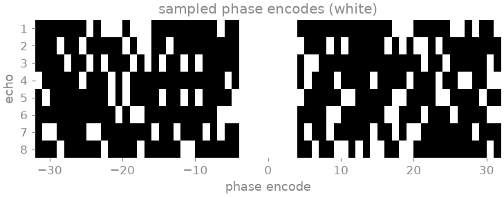
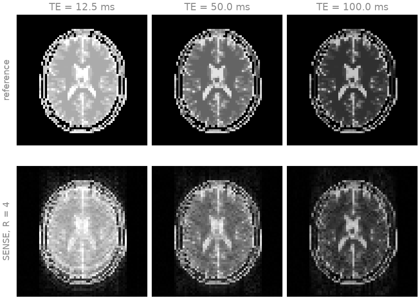
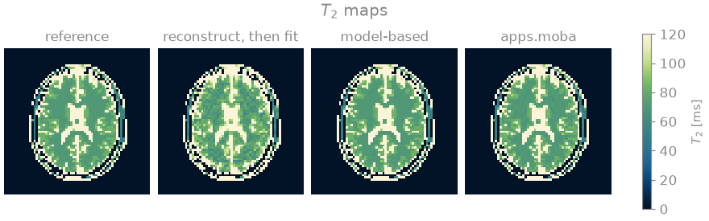
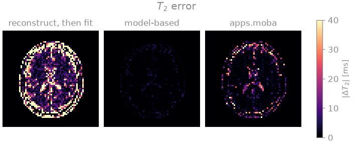

Note
Go to the end to download the full example code.
Parameter maps straight from k-space#
This lesson estimates a \(T_2\) map from an undersampled multi-echo spin-echo acquisition in two ways, and compares them: reconstructing an image per echo and fitting the decay voxel by voxel afterwards, and fitting the signal model directly to the k-space data. The aim is to show why the second, model-based reconstruction, tolerates undersampling that ruins the first.
In a multi-echo spin-echo (CPMG) acquisition the signal of each voxel decays from echo to echo as \(M_0 \exp(-\mathrm{TE}/T_2)\). Undersampling each echo shortens the scan, but a reconstruction of each echo on its own is an ill-posed problem, and its aliasing and noise differ from echo to echo; a voxelwise fit cannot tell them apart from decay, and carries them into the map. The model-based approach [1] [2] puts the signal model inside the forward operator,
where \(P_e\) is the sampling pattern of echo \(e\), \(F\) the Fourier transform, \(S_c\) the sensitivity of coil \(c\), \(M\) the signal model and \(\theta\) the parameter maps, and solves for \(\theta\) from the k-space data of all echoes at once. The unknowns are then three real maps rather than eight complex images, and every echo constrains all of them. The operator is nonlinear in \(\theta\), so the problem is solved by the iteratively regularized Gauss-Newton method of Nonlinear inversion, over a different model.
The model here is bartorch.nlop.MultiEcho, a TorchSim simulator as a
BART nonlinear operator. The phantom and the coil sensitivities are built as
in From k-space to image; the cell that does it is
hidden on this page and present in the script this page can be downloaded as.
Learning objectives
Represent a relaxation model as a TorchSim-backed
bartorch.nlop.SignalModel.Fit it to reconstructed echo images, and directly to k-space by composing it with the encoding, with
bartorch.nlop.IRGNM.Run the same fits through
bartorch.apps.mobafit()andbartorch.apps.moba().Explain, from the echo images and the error maps, why the model-based fit is more accurate at the same undersampling.
It follows Subspace-constrained T1 mapping, and Parameter maps from scanner images fits the same model to images read from DICOM.
import csv
import time
from pathlib import Path
import brainweb_dl
import numpy as np
import torch
from brainweb_dl import get_mri
import bartorch
import bartorch.tools as bt
from bartorch import apps, linop, nlop, optim
SIZE = 64
COILS = 8
ECHOES = 8
ACCELERATION = 4
ECHO_TIMES = torch.tensor([12.5 * (echo + 1) for echo in range(ECHOES)]) # ms
Phantom#
The \(T_2\) of each tissue class from the BrainWeb table, combined by membership, and the echo images from the mono-exponential decay \(M_0 \exp(-\mathrm{TE}/T_2)\) written out here rather than taken from the model that will be fitted.
contrasts = (amplitude[None] * torch.exp(-ECHO_TIMES[:, None, None] / t2[None])).to(torch.complex64)
Acquisition#
Eight echoes at an echo spacing of 12.5 ms, each sampled at a quarter of the phase encodes (\(R = 4\)) around eight fully sampled central lines, with a different random draw per echo, so that the missing phase encodes differ between echoes. The echoes are a batch of the encoding rather than an axis inside it: the sensitivities and the transform are shared, and only the pattern differs, so the operator is the Cartesian SENSE encoding of Operators and solvers with the pattern of each echo applied to its samples.
encoding = linop.CartesianSense(sensitivities, (ECHOES, SIZE, SIZE), ndim=2)
E = linop.Diagonal(lines.to(torch.complex64), encoding.oshape) @ encoding
measured = bt.noise(E(contrasts), n=1e-6, s=9)
data = measured / float(E.H(measured).abs().max())
print(f"{E.ishape} -> {E.oshape}")

(8, 64, 64) -> (8, 8, 64, 64)
The signal model#
bartorch.nlop.MultiEcho maps parameter maps to one image per echo.
Its unknowns are \(T_2\) and a complex amplitude, carried as three real
maps in a bounded parameterisation rather than in their own units, so
initial() builds a starting point from
values and split() reads the fit back.
unknowns ('T2', 'amplitude.real', 'amplitude.imag'): (3, 64, 64) -> (8, 64, 64)
Two routes#
The first reconstructs the echo images by conjugate gradients on the SENSE
normal equations and fits the model to them voxel by voxel, which is what
bartorch.apps.mobafit() does given the images. The second composes the
model with the encoding and fits the k-space with
bartorch.nlop.IRGNM. Both are Gauss-Newton loops of the same number
of steps and differ only in the forward operator that maps the unknowns to
the data.
STEPS = 20
start_time = time.perf_counter()
images = optim.CG(maxiter=40)(data, E)
two_step = apps.mobafit(images, M, iterations=STEPS, T2=80.0)
print(f"reconstruct, then fit: {time.perf_counter() - start_time:5.1f} s")
start_time = time.perf_counter()
model_based = nlop.IRGNM(iterations=STEPS, cg_maxiter=100, cg_tol=0.1)(data, E @ M, x0=start)
print(f"model inside the operator: {time.perf_counter() - start_time:5.1f} s")
/opt/hostedtoolcache/Python/3.12.14/x64/lib/python3.12/site-packages/torch/jit/_script.py:1491: FutureWarning: `torch.jit.script` is deprecated. Please switch to `torch.compile` or `torch.export`.
warnings.warn(
reconstruct, then fit: 5.7 s
model inside the operator: 15.2 s
E @ M composes a linear operator with a nonlinear one; the derivative of
the composition at a point is the encoding applied to the derivative of the
model, which is the derivative a Gauss-Newton step requires.
The echo images of the first route show what its fit is given. They are compared here with the fully sampled echo images of the phantom.

Each reconstructed echo carries residual aliasing and noise, which differ from echo to echo because each echo has its own sampling pattern. At the later echoes the signal has decayed and the relative error grows, so the late echoes, which determine \(T_2\) most, are also the least accurate.
bartorch.apps.moba() assembles the model-based composition from the
k-space, the model, the sensitivities and the sampling pattern, and returns
the maps in their own units. It scales the data by the rule of
bartorch.optim.data_scaling() and regularizes each step towards the
starting maps rather than towards zero, so its result is not identical to
the fit above.
start_time = time.perf_counter()
one_call = apps.moba(measured, M, sensitivities, pattern=lines, iterations=STEPS, T2=80.0)
print(f"apps.moba: {time.perf_counter() - start_time:5.1f} s")
estimates = {
"two-step": two_step["T2"],
"model-based": M.split(model_based)["T2"],
"apps.moba": one_call["T2"],
}
for name, estimate in estimates.items():
error = float((estimate[support] - t2[support]).norm() / t2[support].norm())
median = float(estimate[support].median())
print(f"{name:>22} median {median:5.1f} ms relative error {error:.3f}")
print(f"{'phantom':>22} median {float(t2[support].median()):5.1f} ms")
apps.moba: 16.5 s
two-step median 86.1 ms relative error 0.483
model-based median 81.5 ms relative error 0.007
apps.moba median 81.3 ms relative error 0.057
phantom median 81.5 ms


The two-step \(T_2\) map is dominated by the errors of the echo images:
a voxelwise fit cannot distinguish residual aliasing from decay, and in
voxels where a late echo is too bright or too dark the fitted \(T_2\) is
far off. The model-based fits reach a much lower error from the same data,
since the model admits only images that decay exponentially from echo to
echo, and the aliasing of eight different sampling patterns is not such an
image. The fit inside the operator reproduces the phantom almost exactly,
because every voxel of the phantom decays with a single \(T_2\), as the
model assumes; a measured voxel holding two tissues decays with two, and a
single exponential cannot represent it. bartorch.apps.moba()
regularizes each Gauss-Newton step towards the starting maps, and its
residual error is largest where \(T_2\) is farthest from the starting
value of 80 ms: in cerebrospinal fluid and the scalp. The maps are drawn with
the navia colormap [3] in a window that spans white and grey matter.
Since the maps are the solver’s unknowns, a regularizer passed to the
linearized problem – the inner solver of bartorch.apps.moba() –
penalizes the maps rather than the echo images. Without sensitivities,
bartorch.apps.moba() estimates the coils jointly with the maps, as
Nonlinear inversion estimates them jointly
with an image. Nonlinear forward models explains the model-based
approach in more detail.
References#
Total running time of the script: (0 minutes 38.438 seconds)